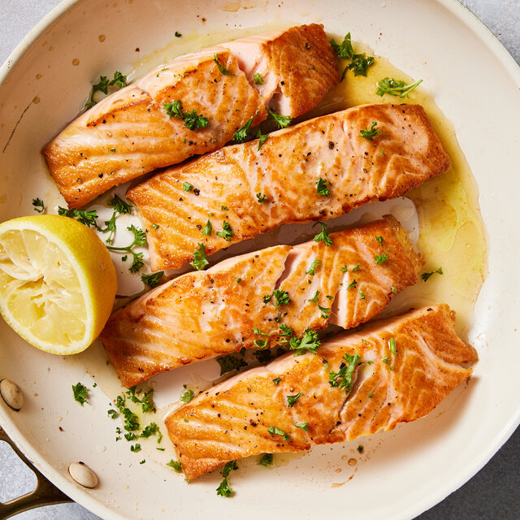

Pan-Seared Salmon

Description
Pan-seared salmon is an excellent option for a weeknight meal. It cooks quickly, and you can use this basic cooking technique for other types of fish or give it your own spin with extra flavors and ingredients.
Ingredients
- 4 salmon fillets, skin on
- 2 tablespoons vegetable oil
- 1 teaspoon Diamond Crystal kosher salt
- 1/4 teaspoon ground black pepper
- 4 lemon wedges
Steps
- Gather the ingredients.
- Pat the salmon dry with paper towels. If you have time, let the salmon sit out at room temperature for up to 30 minutes.
- Season the salmon fillets on both sides with salt and pepper.
- Set a large heavy skillet or cast-iron pan over medium heat and add the oil. Allow it to preheat for a few minutes until the oil starts to shimmer.
- Add the salmon skin-side down, and sear for 4 to 5 minutes or until the skin is nicely browned and releases easily from the pan.
- Flip the salmon fillets and cook for another 1 to 2 minutes or until they reach an internal temperature of 125 F.
- Transfer the salmon fillets to a serving plate and let them rest for 5 minutes. Serve with lemon wedges to squeeze over the fillets.